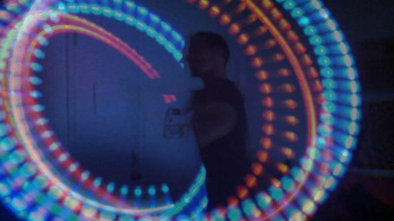
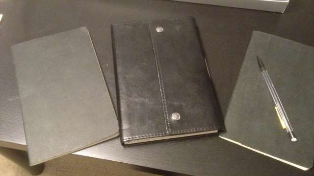

Inspiration
I believe what drives a person is a good measure of their character.
I am powered by innovation. I try to make it so that new experiences and lessons are a constant in my life. I live for the opportunity to explore the world from muse to muse. Some examples these oasis' of inspiration are as follows:

Poi in all of it's forms as the practice of flow and inner harmony.

Your dreams. My dreams. A pet's dreams. All dreams can be good dreams if considered critically and applied positively.
A good story. Whether I'm on the Alligator beat or kicking back with friends my eyes are always open for a good tale.